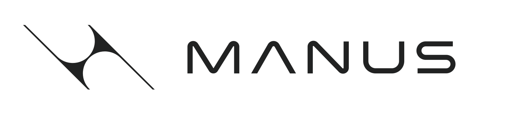
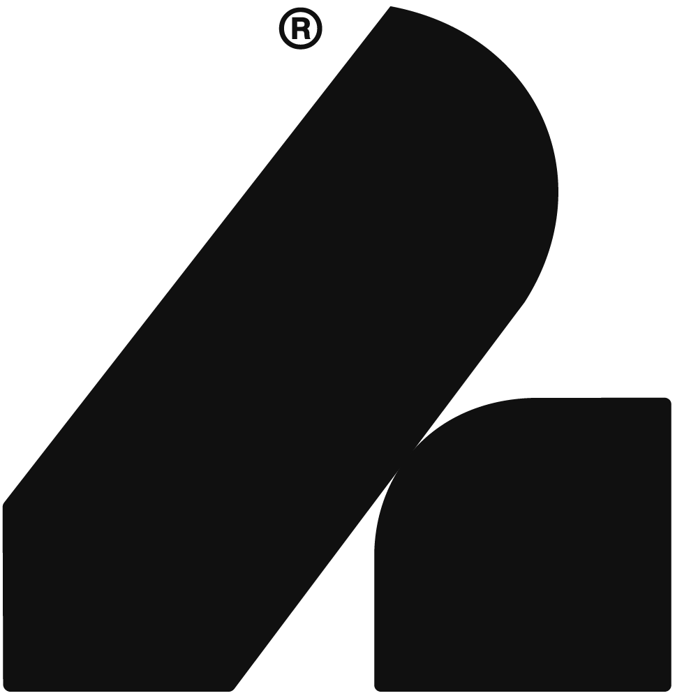

Ecosystem#
The Isaac Teleop ecosystem brings together the input devices, data services, and cloud platforms that work seamlessly with the unified teleoperation stack. Browse every entry and follow the link straight to its landing page, integration guide, or acquisition channel.
Devices — Headsets, controllers, gloves, pedals, and master manipulators.
Data workflows — Tools and services for recording, processing, and managing teleoperation data.
Teams building on Isaac Teleop — Robot makers shipping teleoperation in their own product, and labs collecting data.
Supported Devices 9#
A standardized device interface removes custom integrations and their maintenance. Input modes determine which retargeters and control schemes are available. Add a new device →
Device
Input modes
XR Headsets and Tracking Peripherals
Hand tracking (26 joints), spatial controllers
DetailsClose
Requirements
Built from source with Xcode
Acquire
Meta Quest 2 / 3 / 3S (external)
Motion controllers, hand tracking
DetailsClose
Requirements
No additional software
Acquire
Motion controllers, hand tracking
DetailsClose
Requirements
PICO OS 15.4.4U or newer
PICO Motion Tracker (external)
Full body tracking
DetailsClose
Requirements
PICO 4 Ultra Enterprise, or a consumer unit with enterprise features activated (contact PICO)
PICO OS 15.4.4U+ · PICO Browser 4.0.40+
Standalone Input Devices
MANUS Metagloves Pro (external)
High-fidelity finger tracking
DetailsClose

Requirements
MANUS SDK
USB receiver on the workstation
Haptikos Exoskeletons (external)
Finger tracking, haptic feedback
DetailsClose

Requirements
Haptikos Robotics API
Acquire
Tactile contact sensing (80 taxels), 6-axis IMU
DetailsClose
Requirements
Linux with BlueZ
One BLE device per glove
Plugin off by default — enable at build time
Acquire
—
Logitech Rudder Pedals (external)
3-axis foot pedal
DetailsClose
Set up
Requirements
USB connection to the workstation
Acquire
Offline data recording
DetailsClose
Requirements
USB 3 connection to the workstation
Acquire
Planned3Dconnexion 3D Space Mouse — HID input over USB, CLI tool.Tracking #276
Data Factory 3#
Frameworks and services for collecting teleoperation data and turning it into training datasets.
Name
Provides
Robot learning framework, dataset collection
DetailsClose
Ego data capture, simulation assets
Noitom Motion Capture (external)
Full-body motion capture
DetailsClose
Cloud Infrastructure 1#
Cloud platforms available for running Isaac Teleop workloads.
Become Part of Isaac Teleop#
Two ways in, both on GitHub: bring a device to the stack, or build on the stack itself.
Add your device
Devices connect through a plugin process, so your SDK stays in your own repository under your own license. Build the plugin, open a pull request, and the device joins the tables above.
Build on Isaac Teleop
Collect teleoperation data with it, or run it as the teleoperation stack inside the robot you are building. One interface covers every device listed above.
Looking to go further together? Tell us what you are building. We review submissions on a rolling basis and will be in touch if we see an opportunity to work more closely together.